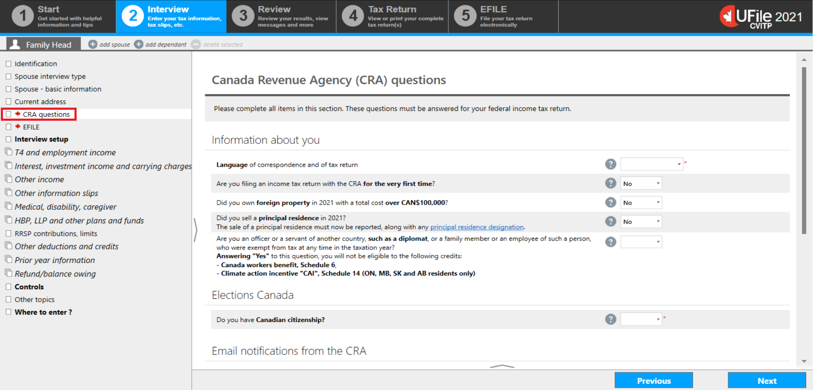
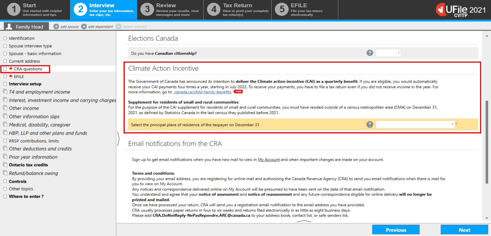
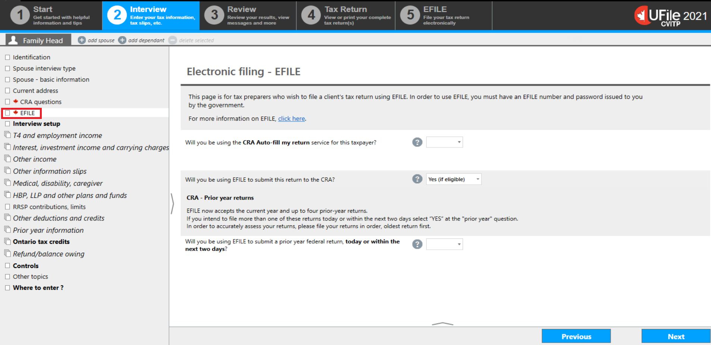

CRA related sections
On this page
CRA questions
Text version
UFile screen
Under Interview tab
Family Head sub-tab
CRA questions topic is highlighted
Select English or French to determine the language in which the tax return will be transmitted or printed. This selection will also determine the language the CRA will use when sending correspondence to the individual. The language you select in this section does not affect the language displayed in UFile as you complete the tax return.
Nice to know
Some fields are defaulted to No. Ensure that you go over these questions with the individual and adjust the answers as required.
Under the Elections Canada section, if you select Yes to the question Do you have Canadian citizenship?, an additional question will populate asking if the individual authorizes the CRA to share their information with Elections Canada.
In this example, based on the information entered in the Identification section, the individual may have to complete additional questions.
Text version
UFile screen
Under Interview tab
Family Head sub-tab
CRA question topic is highlighted
Climate action incentive section is highlighted
Climate Action Incentive, Supplement for residents of small and rural communities
Select the principal place of residence of the taxpayer on December 31 is highlighted
EFILE
Text version
UFile screen
Under Interview tab
Family Head sub-tab
EFILE topic is highlighted
The Electronic filing – EFILE section is where you indicate if you will be using the CRA Auto-fill my return (AFR) service and if you will be using EFILE to submit the tax return.
Selecting Yes for the question Will you be using the CRA Auto-fill my return service for this taxpayer? will generate a CRA Authorization request in the left-side menu under the Tax Return tab. For more information on the Authorization request, refer to Auto-fill my return.